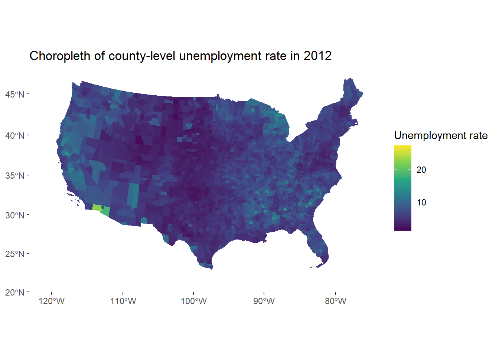
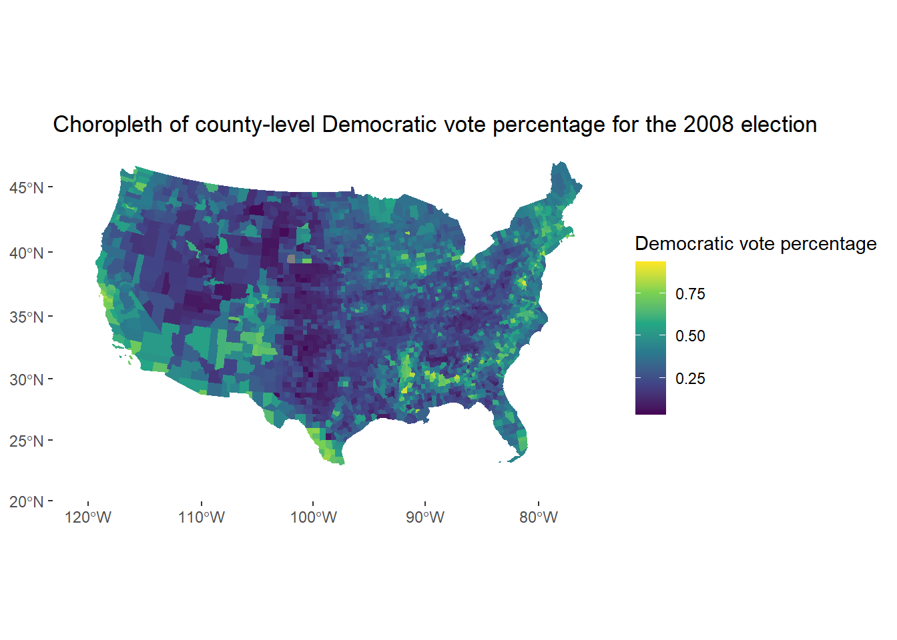

Assignment 6
Anderson Monken
11/7/2020
Read in raw data files in Python then bring into R
Process the raw data in python and make it into a joinable dataset for R
import os
import pandas as pd
#os.chdir(r'C:\Users\Monke\Documents\GitHub\anly503-fall2020-a6-AndersonMonken')
# read in data
df_raw = pd.read_csv('data/countypres_2000-2016.csv')
# restrict to only years 2008 onwards
df_raw = df_raw[df_raw.year >= 2008]
# remove any rows without FIPS codes
df_raw = df_raw[~ pd.isna(df_raw.FIPS)]
# make variable for proportion of vote for democrats!!
df_raw = df_raw[df_raw.party == 'democrat']
df_raw['dem_prop_votes'] = df_raw.candidatevotes / df_raw.totalvotes
# fix FIPS code so its always 5 digits
df_raw['FIPS'] = df_raw.FIPS.astype('int').astype('str').str.pad(width = 5, side = 'left', fillchar = '0')
# set up the final election dataframe, dropping unnecessary variables
df_elections = df_raw.drop(columns = ['party','candidate','office','version','candidatevotes','totalvotes']).reset_index(drop = True)
# read in data
df_raw = pd.read_excel('data/Unemployment.xls',header = 7)
# keep only the variables we need
df_raw = df_raw[['FIPStxt','Stabr','area_name','Unemployment_rate_2016','Unemployment_rate_2012','Unemployment_rate_2008']]
# process the FIPS code so it is padded with zeros
df_raw['FIPStxt'] = df_raw.FIPStxt.astype('str').str.pad(width = 5, side = 'left', fillchar = '0')
# stack the data (wide to long) so it will be easier to filter later on
df_urate = df_raw.set_index(['FIPStxt','Stabr','area_name']).stack().reset_index()
# rename variables
df_urate = df_urate.rename(columns = {0 : 'urate', 'level_3' : 'year', 'FIPStxt' : 'FIPS'})
# set the year variable
df_urate['year'] = df_urate.year.str.slice(-4).astype('int')df_urate <- py$df_urate
df_elections <- py$df_electionsShapefile processing and merging data
We read in the county shape files. The GEOID variable already includes the concatentation of STATEFP and COUNTYFP, so no new variable is needed. We transform the data into crs 2163 projection to make the US look nicer.
# read in the data using the sf package
# the function st_read makes a complex dataframe
countymap <- st_read(dsn = "data/shape_files",
layer = "tl_2019_us_county") %>%
st_transform(crs = 2163)## Reading layer `tl_2019_us_county' from data source `C:\Users\Monke\Documents\ANLY503_Portfolio\data\shape_files' using driver `ESRI Shapefile'
## Simple feature collection with 3233 features and 17 fields
## geometry type: MULTIPOLYGON
## dimension: XY
## bbox: xmin: -179.2311 ymin: -14.60181 xmax: 179.8597 ymax: 71.43979
## geographic CRS: NAD83Plotting the six choropleths
I write a function that takes in a variable type and a year, and returns the appropriate map plot.
map_func <- function(variable_type, year){
if (variable_type == 'urate') {
plot_data <- df_urate %>% rename(value = urate) %>% filter(year == year) %>% full_join(countymap, by = c('FIPS' = 'GEOID'))
plot_title <- paste('Choropleth of county-level unemployment rate in',year)
legend_title <- 'Unemployment rate'
} else if (variable_type == 'vote'){
plot_data <- df_elections %>% rename(value = dem_prop_votes) %>% filter(year == year) %>% full_join(countymap, by = c('FIPS' = 'GEOID'))
plot_title <- paste('Choropleth of county-level Democratic vote percentage for the',year,'election')
legend_title <- 'Democratic vote percentage'
}
ggplot(data = plot_data) +
geom_sf(aes(geometry = geometry,
fill = value),
color = NA) +
coord_sf(crs = st_crs(2163),
xlim = c(-2200000, 2500000),
ylim = c(-2300000, 730000)) +
# plot title
ggtitle(plot_title) +
# legend title
scale_fill_viridis_c(name = legend_title) +
# theme remove plot background
theme(panel.background = element_blank())
}We ran the function six times to get our nice choropleth outputs. You can see the output ordered by year or map type below.
output_maps <- list()
output_maps[['u1']] <- map_func('urate',2008)
output_maps[['v1']] <- map_func('vote',2008)
output_maps[['u2']] <- map_func('urate',2012)
output_maps[['v2']] <- map_func('vote',2012)
output_maps[['u3']] <- map_func('urate',2016)
output_maps[['v3']] <- map_func('vote',2016)Year-separated maps
2008
output_maps[['u1']]output_maps[['v1']]
2012
output_maps[['u2']]
output_maps[['v2']]2016
output_maps[['u3']]
output_maps[['v3']]
Variable-separated maps
Unemployment Rate
output_maps[['u1']]
output_maps[['u2']]
output_maps[['u3']]Democratic Election Vote
output_maps[['v1']]
output_maps[['v2']]output_maps[['v3']]